Keywords: local motion planning; dynamic window approach; obstacle avoidance; time-to-collision; risk field; motion prediction; autonomous driving
Local motion planning must fix steering and speed at every control cycle from imperfect information. Reactive planners such as the Dynamic Window Approach (DWA) are fast and training-free, but they regulate geometry and speed with one fixed cost, so a single weighting must serve an open road and a close crossing, and their obstacle terms usually ignore how obstacles will move. We study what governs the achievable safety margin in this setting and propose the Risk-Adaptive Dynamic Window Approach (RA-DWA). RA-DWA replaces the fixed obstacle term with a bounded normalized time-to-collision risk field R = exp(−TTC/T0) integrated along each candidate roll-out, propagates obstacles with their measured motion, and re-weights safety, progress and smoothness through a closed-form four-state scheduler; the same field also caps the admissible speed. It needs no offline training. On a frozen six-scenario benchmark with paired statistics and 50 seeds, RA-DWA reached 0.99 success with one collision in 300 episodes against 0.91 and 0.06 for DWA (p < 1e-4). Motion-aware prediction is the dominant factor: a DWA given the same prediction matches RA-DWA on success and collisions (0.96, 0.00), and a velocity-obstacle planner tuned to the same safety distance matches it again (0.99, 0.00), including under perception noise once the safety distance is matched. RA-DWA's advantage is therefore margin and comfort rather than task success: it holds the largest minimum time-to-collision in the suite (3.56 s, about 2.7 times the next best) and the lowest steering-rate variance (0.019), at a 48 ms worst-case p95 on a commodity laptop. The ordering holds against DWA, APF, MPPI and a timed elastic band, and on SUMO-generated traffic. The practical reading is that motion-aware, time-based risk terms, not the choice of a graded or a hard decision rule, set the achievable margin in reactive planning.
Local motion planning is the layer that turns a route into the next control command. At each cycle of 50–100 ms it must answer two coupled questions, which way to go and how fast. Answers that are fast to compute let a vehicle react to obstacles that were not in the map; answers that are smooth and consistent keep the ride comfortable and the controller stable. Real-time obstacle avoidance therefore trades computation against the quality of a two-variable decision, and it must do so from a state estimate that is never exact.
Reactive planners dominate the low-latency end because they score a small closed set of candidate motions. The Dynamic Window Approach (DWA) samples reachable (v, ω) pairs inside an acceleration-limited window under a single set of fixed weights [1]; the curvature-velocity method searches a similar space with a curvature-based cost [8], the Vector Field Histogram injected local obstacle density into the steering decision [3], artificial potential fields sum attractive and repulsive forces [2], and the global dynamic window extended the approach to a global navigation function [9]. These planners are interpretable and training-free, but their cost is fixed and most of them treat obstacles as momentarily static, so one objective must serve both an open road and a close crossing, and a moving obstacle is seen where it is rather than where it will be. A second family replaces the static objective with a geometric test or an online optimisation. Velocity-obstacle methods reject motions that reach a collision within a horizon [4], reciprocal variants make the test symmetric across agents [12,13], sampling control such as MPPI weights stochastic roll-outs [5], and trajectory-optimisation methods deform a path against obstacle and kinematic terms, including the timed elastic band [6], CHOMP [14], STOMP [15] and sequential convex optimisation [16]. These methods are strong, and they predict motion, but they cost more computation per cycle and a hard feasibility test is binary against a state that is only estimated.
This paper asks what actually governs the safety margin that a reactive planner can hold, and it answers with one quantity. Our first observation is that prediction is not optional: a planner that scores obstacles where they are will fail where obstacles move, however its decision rule is shaped. Our second observation is that a bounded, time-based quantity can carry the avoidance decision and its speed: a normalized time-to-collision risk field R = exp(−TTC/T0) [7] is continuous in the predicted motion, so it can serve as both a cost and a soft constraint and it can be integrated along a candidate roll-out, where a distance penalty cannot. We build the Risk-Adaptive Dynamic Window Approach (RA-DWA) on this field. Each candidate (v, ω) is rolled out and the field is integrated along it, with obstacles propagated by their measured motion; a closed-form four-state scheduler maps the smoothed hazard level to the weights on safety, progress and smoothness, with hysteresis and weight smoothing; and the same field caps the admissible speed set. RA-DWA is training-free, interpretable and bounded in computation.
We evaluate RA-DWA against five baselines and, to separate prediction from the decision rule, against a sixth: DWA with the same motion-aware prediction but its original fixed cost (DWA-P). This control is decisive. In clean conditions and under perception noise, DWA-P matches RA-DWA on success and collisions, so the large gains over classical DWA come from prediction rather than from the risk field. What remains clearly attributable to RA-DWA is the margin and the comfort: it holds the largest minimum time-to-collision of any planner in the suite and the lowest steering-rate variance, and it keeps both under noise, command delay and independent SUMO-generated traffic.
This paper makes three contributions. First, a risk-based cost for reactive planning: a normalized time-to-collision field integrated along the roll-out replaces the fixed obstacle penalty and yields a substantially larger safety margin than classical DWA at equal task success (Sections 4 and 6). Second, a controlled decomposition of where the gains come from: a prediction-matched DWA control and a margin-matched velocity-obstacle control show that motion-aware prediction is the dominant factor for success, and that the residual advantage of the risk field is margin and smoothness, not task success (Sections 6.1, 6.5, 6.8). Third, a reproducible evaluation: a frozen six-scenario benchmark with paired statistics and Wilson intervals, a perception-noise and actuation-stress study, a runtime-scaling measurement, and an independent SUMO-traffic validation (Sections 5 and 6).
The rest of the paper is organised as follows. Section 2 positions RA-DWA against reactive, sampling and optimisation-based planners. Section 3 states the problem and notation. Section 4 develops the method. Section 5 describes the benchmark and baselines. Section 6 reports the comparison, ablation, sensitivity, real-time cost, robustness, scalability and external validation. Section 7 states the scope and limitations, and Section 8 concludes.
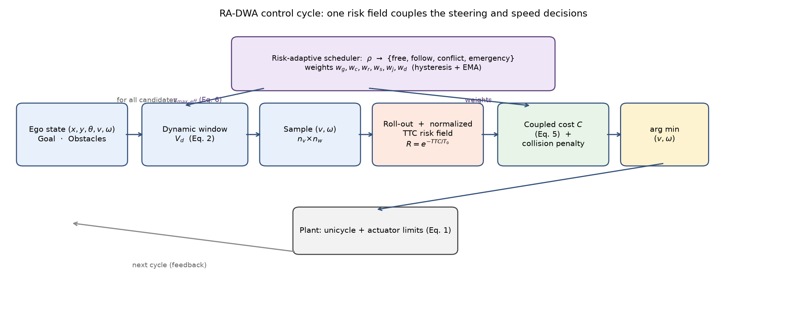
Reactive and geometric planners. The Dynamic Window Approach (DWA) samples reachable (v, ω) pairs inside an acceleration-limited window and scores them with fixed weights [1]; the curvature-velocity method searches a similar space with a curvature-based cost [8], the Vector Field Histogram injected local obstacle density into the steering decision [3], artificial potential fields sum attractive and repulsive forces [2], and the global dynamic window extended the approach to a global navigation function [9]. These planners are fast and training-free, but their cost is fixed and their obstacle terms are usually static in time, so one objective must serve both an open road and a close crossing.
Dynamic-window variants with prediction. Later DWA variants added prediction and time-based safety. Seder and Petrović score candidate windows by the estimated time to collision with moving obstacles and select a dedicated avoidance window when a conflict is detected [10], and Missura and Bennewitz add a predictive collision check to the window [11]. These methods establish, as our study confirms, that time-to-collision information improves reactive avoidance. RA-DWA shares that ingredient and differs in how it is used. It carries no separate avoidance mode; the risk field is continuous, it is integrated along every roll-out rather than evaluated at a checkpoint, and the same value both scores a motion and shrinks the admissible speed set, so a small change in the hazard produces a small change in the command. Whether that continuity buys safety is an empirical question, and Section 6.5, with a prediction-matched DWA control and a margin-matched velocity-obstacle control, answers it in the negative for task success and in the affirmative for margin. We are explicit about this because it is the main negative result of the paper.
Velocity-obstacle and trajectory-optimization planners. A second family replaces the static objective with a geometric feasibility test or an online optimisation. Velocity obstacles reject motions that lead to collision within a horizon [4], reciprocal variants make the test symmetric across agents [12,13], sampling-based control such as MPPI weights stochastic roll-outs by an exponential of cost [5], and trajectory-optimisation methods deform a path against obstacle and kinematic terms, including TEB [6], CHOMP [14], STOMP [15] and sequential convex optimisation [16]; lattice planners discretise the spatiotemporal action space [17], and surveys cover the family [18]. These methods predict motion and are strong, at a higher computational cost and, for a hard test, with a binary response to a state that is only estimated.
Time-to-collision and risk. TTC and its variants are established measures of collision risk in traffic safety [7,19]. Using a bounded, time-based risk field as the cost of a real-time local planner, and as the quantity that also sets its admissible speed, is what this work contributes.
Learning-based planners. End-to-end policies map perception directly to commands and handle rich scenes, but they need large labelled datasets and are hard to certify; representative works include data-driven motion planning [20] and conditional imitation learning [21]. RA-DWA requires no offline training.
Benchmarks and simulators. Reproducible evaluation of local planners needs fixed scenarios and traffic models; microscopic traffic simulators such as SUMO [22] and benchmark suites such as CommonRoad [23] provide them. We use both, a frozen six-scenario suite with paired statistics and a SUMO-generated corridor for external validation (Section 6.8).
The vehicle is modelled as a planar unicycle with state (x, y, θ), commanded forward speed v and yaw rate ω:
Control is applied at a fixed period Δt = 0.1 s through an actuator envelope: |v| ≤ v_max, |ω| ≤ ω_max, and per-cycle limits on longitudinal acceleration a ∈ [a_dec, a_acc] and angular acceleration |α| ≤ α_max. The dynamic window at time t contains the reachable commands:
The planner receives the ego state and a set of circular obstacles, each with position, radius and velocity, within a sensor range, and a goal pose, and returns one (v, ω) per cycle. Obstacles are sensed with bounded position and velocity error, and the effect of that error is measured in Section 6.5. Notation is summarised in Table 1.
| Symbol | Meaning |
|---|---|
| x, y, θ | ego position and heading |
| v, ω | commanded forward speed and yaw rate |
| Δt | control period (0.1 s) |
| V_d | dynamic window of reachable (v, ω) commands |
| v_max, ω_max | speed and yaw-rate limits (8 m/s, 1.5 rad/s) |
| a_acc, a_dec, α_max | acceleration, deceleration and angular-acceleration limits (2.0, −3.5 m/s², 2.5 rad/s²) |
| T | roll-out horizon (2.5 s) |
| d_safe | safety distance of a pair (sum of radii plus margin) |
| TTC | time to enter the safety disc (Eq. 3) |
| R | normalized TTC risk, exp(−TTC/T0), truncated at 10 s (Eq. 4) |
| T0 | risk horizon (4.0 s) |
| ρ | smoothed instantaneous risk level, drives the scheduler |
| n_v, n_w | speed and yaw-rate samples per cycle (9, 17) |
| w_g, w_c, w_r, w_s, w_j, w_d | progress, heading, risk, smoothness, jerk and clearance weights (Eq. 5) |
| C_col | fixed penalty for predicted-collision roll-outs |
| gain | admissible-speed modulation gain (0.3, Eq. 6) |
For a candidate motion, the risk at a point is derived from the earliest collision time. For a point p moving at velocity v_p and an obstacle at relative position Δp with relative velocity Δv, the time to enter a safety disc of radius d_safe (the sum of the vehicle and obstacle radii plus a margin) is the smallest non-negative root of
The risk field maps this time to a bounded scalar,
so R is near one for imminent contact and decays to zero within a few seconds. The bounded exponential is our choice, not the definition of TTC: it gives a finite look-ahead without the long tail of the hyperbolic form 1/(1 + TTC/T0), which keeps charging a small risk for safe forward motion and, once progress is down-weighted, makes stopping locally optimal. Truncating the exponential beyond 10 s removes the residual tail exactly. The field evaluated around a moving vehicle and the corresponding cost landscape over sampled roll-outs are shown in Figure 2.
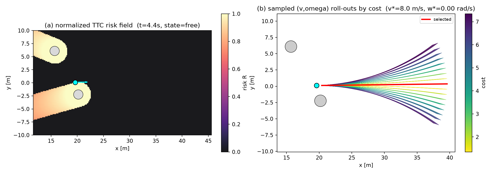
Each obstacle is propagated along its measured velocity, so the TTC in Equation (3) is evaluated against the obstacle's predicted position at each roll-out step rather than its current position. The ablation in Section 6.2 and the prediction-matched control in Sections 6.1 and 6.8 show that this single step, not the shape of the decision rule, is the largest factor in task success.
Each candidate (v, ω) in V_d is rolled out over a horizon T = 2.5 s at constant command. The trajectory is scored by
where progress is the distance from the roll-out end to the goal, heading is the final heading error, ∫ R dt is the risk field integrated over the roll-out, smooth and jerk penalise the first and second differences of the command, and clearance penalises trajectories whose minimum obstacle clearance falls below a target. C_col is a large fixed penalty for trajectories predicted to enter the safety disc, which makes collisions effectively inadmissible. The risk integral is the coupling point: the same R that makes a lateral avoidance expensive also makes a fast longitudinal command expensive, so steering and speed are weighed together. The admissible speed set is additionally capped by the hazard level,
applied when the scheduler is in a risky state, where ρ is the smoothed risk level (below). The ablation shows this explicit cap is neutral for safety in our scenarios (Table 5); it is retained for interpretability, and the coupling that matters is the shared cost in Equation (5).
The instantaneous risk level is the field value at the current state, smoothed over cycles by an exponential moving average (rate 0.3) to suppress chattering. Four contexts are defined by two thresholds, with safety weight w_r and progress weight w_g:
| Context | Condition | w_r | w_g |
|---|---|---|---|
| free | ρ < 0.15 | 1.2 | 1.0 |
| follow | 0.15 ≤ ρ < 0.25 | 2.0 | 0.8 |
| conflict | 0.25 ≤ ρ < 0.50 | 5.0 | 0.35 |
| emergency | ρ ≥ 0.50 | 9.0 | 0.10 |
Hysteresis (0.12) requires the risk to fall below a lowered threshold before the context relaxes, and the weight vector itself is smoothed by an exponential moving average (rate 0.25) so preset changes do not step the command. The scheduler is closed-form and train-free; Figure 3 shows the weight schedule, the speed modulation and a state timeline from a run.
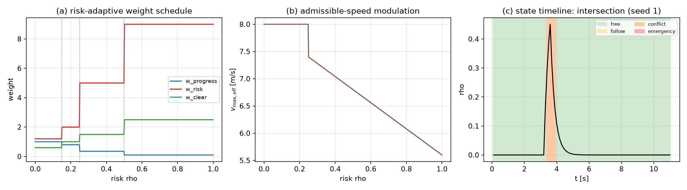
Algorithm 1 summarises one control cycle. With n_v speed samples and n_w yaw-rate samples, the cost is evaluated on n_v · n_w roll-outs of length T/Δt, each against the obstacles in range. The computation is O(n_v · n_w · (T/Δt) · n_obs) with fixed coefficients and no offline model; the measured cost is in Section 6.4 and its scaling in Section 6.6.
Simulator. A self-contained two-dimensional kinematic simulator advances the unicycle (Equation 1) at Δt = 0.1 s and applies the actuator envelope of Section 3 to every command, independently of the planner, so all planners face identical plant dynamics. Planner latency is measured per cycle with a monotonic clock.
Scenarios. Six scenarios exercise the decision from different directions (Figure 4; Table 2): a static obstacle field; multi-agent crossing; dense merging; oncoming traffic on a narrow road; an intersection; and a roundabout with a central island. Following the practice of composable planning benchmarks [23], every scenario is generated deterministically from its identifier and an integer seed, so the benchmark is bit-reproducible.
Baselines. Six baselines span the reactive, sampling and optimisation families and are configured on the same plant and scenarios (Table 3). DWA is the classical fixed-weight planner [1]; DWA-P is DWA with the same motion-aware obstacle prediction as RA-DWA but its original cost, the control that isolates prediction from the decision rule; APF [2] is a potential-field planner; VO [4] is a velocity-obstacle sampler whose safety margin is tuned by hand to the same effective safety distance as RA-DWA's field (0.7 m); MPPI-lite is a 64-sample stochastic controller [5]; TEB [6] is an optimisation planner. All planners see identical obstacle information.
Metrics. Success (reaching the goal tolerance without a collision), collision, timeout, deadlock, minimum obstacle clearance, minimum TTC (over finite encounters only), mean |jerk|, variance of ω, and per-cycle latency (mean, p95, max).
Protocol. The main comparison uses 50 seeds per scenario (300 episodes per planner; TEB 20 seeds, 120 episodes, because of its cost). Rates carry 95% Wilson intervals, and pairs are compared with McNemar's exact test for rates and the Wilcoxon signed-rank test for continuous quantities, matched by scenario and seed. The ablation uses 20 seeds per variant, the perception-noise and actuation-stress sweeps 15 and 8 seeds, and the SUMO validation 20 seeds. The frozen configuration is fingerprinted (SHA-256 823709ac…) and every planner, scenario and table is regenerated from it; a dependency-free checker (33 invariants, including cross-process determinism of scenario generation) accompanies the code. The unit of inference is the episode, and the six scenarios are a fixed, deliberately varied set rather than a random sample, so results describe these scenarios and are not extrapolated to a population of environments.
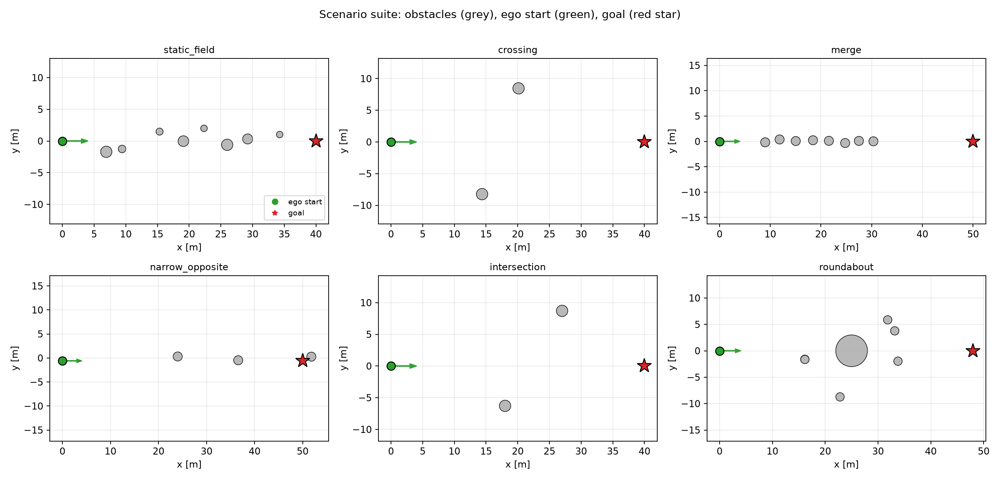
| Scenario | Description | Key parameters |
|---|---|---|
| Static field | eight static circular obstacles between start and goal | n = 8, x ∈ [7, 33] m, r ∈ [0.5, 1.0] m |
| Crossing | two vehicles crossing the ego path perpendicularly | positions x ≈ 15, 20 m; speed 1.0–3.5 m/s |
| Dense merge | platoon of slow vehicles ahead in the ego lane | n = 8; speed 2.0–3.5 m/s; spacing 2.5–3.8 m |
| Oncoming narrow road | oncoming vehicles on a narrow corridor | n = 3; −3.0 m/s; lateral offset ±0.6 m |
| Intersection | two vehicles crossing at two approach lines | x = 18 m and 27 m; speed 1.0–3.0 m/s |
| Roundabout | six vehicles on a ring around a central island | island r = 3 m; ring r = 9 m; ω = 0.38 rad/s |
Ego and plant: r = 1.0 m, v_max = 8 m/s, ω_max = 1.5 rad/s, a_acc = 2.0 m/s², a_dec = −3.5 m/s², α_max = 2.5 rad/s²; Δt = 0.1 s, max episode time 40 s, goal tolerance 1.5 m.
| Planner | Family | Parameters (as configured) |
|---|---|---|
| DWA | reactive, fixed weights, static obstacles | horizon 1.5 s; n_v = 9, n_w = 17; weights progress 1.0, heading 0.35, obstacle 3.0, smoothness 0.15, velocity 0.05; obstacle radius 1.6 m |
| DWA-P | reactive, fixed weights, predicted obstacles | as DWA, with obstacles propagated by their measured velocity |
| APF | reactive, potential field | k_att 1.0, k_rep 6.0, d0 6.0 m, k_omega 2.0, v_ref 6.0 m/s, slow radius 5.0 m |
| VO | sampling, hard feasibility | horizon 2.0 s; n_v = 11, n_w = 21; v_ref 7.0 m/s; progress 1.0, velocity 0.1, heading 0.5; safety margin 0.7 m |
| MPPI-lite | sampling, stochastic | horizon 1.5 s; 64 samples; σ_v 1.6, σ_ω 0.6; temperature 1.0; obstacle radius 1.6 m |
| TEB | optimisation | 8 poses; dt ∈ [0.1, 0.6] s; L-BFGS, 15 iterations, 3 lateral starts; obstacle margin 1.8 m; weights obstacle 120, time 1.0, kinematics 2.0 |
| RA-DWA | reactive, risk-adaptive | horizon 2.5 s; n_v = 9, n_w = 17; T0 4.0 s, cutoff 10 s; d_safe margin 0.5 m; four-state scheduler (Table in Section 4.4); weight EMA 0.25 |
RA-DWA completed 0.99 of episodes with one collision in 300 runs, against 0.91 and 0.06 for DWA (Table 4). The gains over classical DWA are large and significant on every metric (p < 1e-4). They are not, however, a property of the risk field alone. DWA-P, which keeps DWA's fixed cost but predicts obstacle motion as RA-DWA does, reaches 0.96 success and 0.00 collisions, statistically indistinguishable from RA-DWA on both (collision p = 1.0, success p = 1.3e-2 in RA-DWA's favour). A velocity-obstacle planner whose safety margin is tuned to the same effective safety distance reaches 0.99 and 0.00, also indistinguishable (p = 1.0). Prediction, and a safety distance that reflects the method's own risk model, account for the success and collision results; the risk field is not required for them.
What the risk field does change is the margin and the comfort. RA-DWA holds the largest minimum time-to-collision in the suite, 3.56 s, about 2.7 times the next best (VO 1.11 s and DWA-P 1.34 s; both p < 1e-30), and the lowest steering-rate variance, 0.019 (all baselines p < 1e-27). Its mean |jerk| is the lowest of the strong planners at 1.92, though the difference from DWA-P (2.02) is not significant (p = 0.30). Its minimum clearance, 0.56 m, is the smallest in the suite; DWA-P (1.29 m) and VO (0.70 m) keep more physical distance, which is consistent with RA-DWA accepting closer physical passes in exchange for a larger time margin and smoother motion. Against TEB and the two weaker reactive baselines the comparison is favourable on success, safety and cost: TEB 0.85 success, 0.15 collisions, mean |jerk| 8.77 and 306 ms worst-case p95; APF 0.51 success; MPPI 0.69 success and the highest jerk of the reactive set (Figure 5).
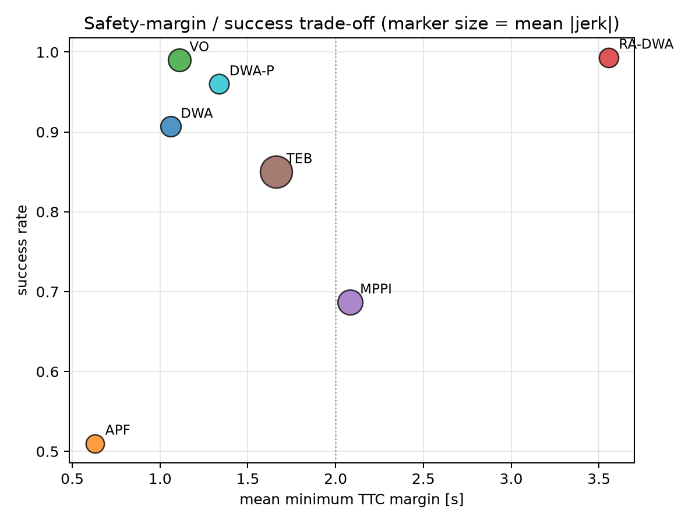
| Planner | Succ. (95% CI) | Coll. (95% CI) | Min clear. | Min TTC [s] | Mean |jerk| | Var(ω) | Succ. (noise) | p95 lat. [ms] |
|---|---|---|---|---|---|---|---|---|
| DWA | 0.91 [0.87, 0.93] | 0.06 [0.04, 0.09] | 1.05 | 1.06 | 2.31 | 0.146 | 0.72 | 12.2 |
| DWA-P | 0.96 [0.93, 0.98] | 0.00 [0.00, 0.02] | 1.29 | 1.34 | 2.02 | 0.067 | 0.98 | 9.3 |
| APF | 0.51 [0.45, 0.57] | 0.28 [0.23, 0.33] | 1.02 | 0.63 | 1.49 | 0.004 | 0.50 | 0.1 |
| VO | 0.99 [0.97, 1.00] | 0.00 [0.00, 0.01] | 0.70 | 1.11 | 3.37 | 0.042 | 0.92 | 16.2 |
| TEB | 0.85 [0.78, 0.90] | 0.15 [0.10, 0.22] | 1.01 | 1.66 | 8.77 | 0.046 | n/a | 306 |
| MPPI | 0.69 [0.63, 0.74] | 0.31 [0.26, 0.36] | 0.65 | 2.08 | 4.49 | 0.094 | 0.62 | 5.2 |
| RA-DWA | 0.99 [0.98, 1.00] | 0.00 [0.00, 0.02] | 0.56 | 3.56 | 1.92 | 0.019 | 0.92 | 48.3 |
Significance vs RA-DWA (McNemar for rates, Wilcoxon for continuous quantities), matched by scenario and seed: DWA and APF and MPPI differ on every metric (p < 1e-4, except MPPI clearance p = 3.4e-2); TEB differs on every metric (p < 1e-3); DWA-P differs on success (p = 1.3e-2) and on TTC and Var(ω) (p < 1e-30) but not on collision (p = 1.0) or jerk (p = 0.30); VO differs on TTC, Var(ω) and clearance (p < 1e-27) but not on success or collision (p = 1.0). The "Succ. (noise)" column is success under medium perception noise (position σ = 0.5 m, velocity σ = 0.8 m/s, 10% dropout).
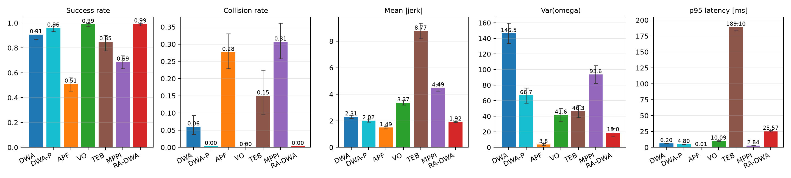
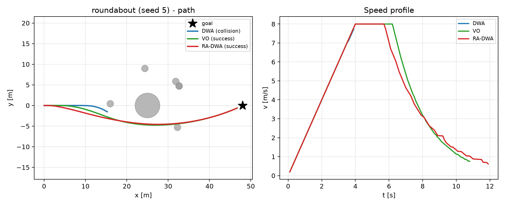
Removing motion-aware prediction is the costliest change: success falls from 0.98 to 0.89 and collisions rise from 0.01 to 0.11 (collision p < 1e-3, success p < 5e-3). Removing the risk field leaves success almost unchanged but collapses the minimum TTC from 3.52 s to 1.40 s (p < 1e-4); the field buys margin rather than raw success. Replacing TTC with a pure distance risk gives 1.19 s, so the time-based measure outperforms distance for margin. Fixing the scheduler weights keeps success but narrows clearance (0.58 m to 0.41 m), and removing the weight smoothing and hysteresis raises mean |jerk| from 1.91 to 2.72 (p < 1e-11). The explicit speed cap of Equation (6) is neutral for safety and slightly lowers jerk when removed, so it is retained for interpretability rather than as a measured gain (Table 5). The ablation and the prediction-matched control agree: prediction sets safety, the risk field sets margin, the scheduler widens margin, and smoothing sets comfort.
| Variant | Succ. | Coll. | Min clear. | Min TTC | Mean |jerk| | Var(ω) | TTC p | jerk p |
|---|---|---|---|---|---|---|---|---|
| RA-DWA (full) | 0.98 | 0.01 | 0.58 | 3.52 | 1.91 | 0.02 | - | - |
| fixed weights | 0.99 | 0.01 | 0.41 | 2.81 | 1.69 | 0.01 | 8.5e-09 *** | 2.1e-05 *** |
| no smoothing | 0.98 | 0.01 | 0.60 | 3.97 | 2.72 | 0.03 | 2.6e-08 *** | 3.8e-11 *** |
| no motion pred. | 0.89 | 0.11 | 0.87 | 3.17 | 2.05 | 0.08 | 4.2e-02 * | 6.6e-03 ** |
| no risk field | 0.97 | 0.01 | 0.52 | 1.40 | 1.71 | 0.04 | 1.7e-14 *** | 6.2e-05 *** |
| distance risk | 0.96 | 0.00 | 0.65 | 1.19 | 1.75 | 0.04 | 2.9e-14 *** | 1.3e-02 * |
| no speed mod. | 1.00 | 0.00 | 0.58 | 3.40 | 1.64 | 0.02 | 1.4e-01 n.s. | 3.3e-08 *** |
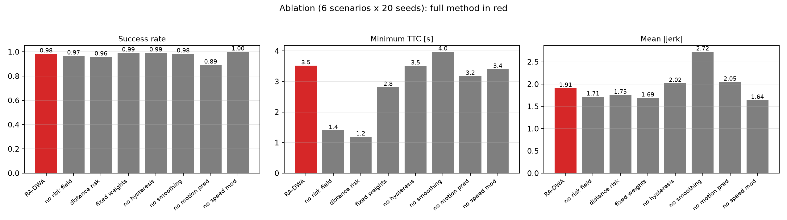
RA-DWA is insensitive across the ranges that matter. Success stays at 1.00 for T0 from 3 s to 6 s, with jerk flat near 2.0; it stays at 1.00 for a safety margin from 0 m to 0.6 m and degrades only at 0.8 m, where an over-conservative target reduces success and raises collisions. The risk horizon T0 therefore does not need fine tuning (Figure 9).
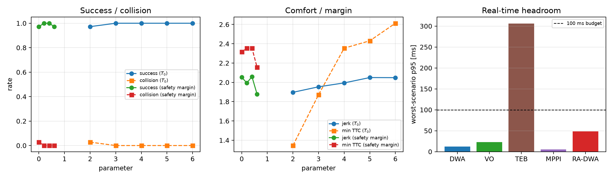
RA-DWA evaluates 153 roll-outs per cycle, the same count as DWA, and runs at a mean latency of 19.5 ms and a worst-case p95 of 48 ms on a commodity laptop, inside a 100 ms budget. It is heavier than the cheap reactive baselines (DWA-P 4 ms mean, VO 9 ms) because it integrates the risk field over the horizon for every obstacle, and lighter than TEB, which is the only planner over budget at 151 ms mean and 306 ms p95 (Table 6). RA-DWA carries no trained model, so its memory and start-up cost are those of a plain sampling planner.
| Planner | mean lat. [ms] | p95 lat. [ms] | max lat. [ms] | roll-outs/cycle | trained model |
|---|---|---|---|---|---|
| DWA | 3.57 | 12.22 | 16.01 | 153 | no |
| DWA-P | 3.99 | 9.31 | 13.54 | 153 | no |
| APF | 0.01 | 0.06 | 0.80 | 1 | no |
| VO | 8.92 | 16.22 | 28.64 | 231 | no |
| TEB | 151.42 | 306.13 | 434.84 | 3 × L-BFGS | no |
| MPPI | 1.60 | 5.15 | 8.98 | 64 | no |
| RA-DWA | 19.51 | 48.31 | 59.23 | 153 | no |
Latency columns are pooled per control cycle except "p95 lat.", which is the worst episode's p95 across the six scenarios.
Real obstacle states carry error, so each planner was re-run with Gaussian position and velocity error and random dropout added to what it perceives; ground truth still drives motion and scoring (n = 90 episodes per cell). Here the prediction-matched control reshapes the picture. DWA-P is the most robust method at medium noise, holding 0.98 success, and DWA-P and RA-DWA are the only planners near 0.70 at the highest noise (0.68 and 0.70). The velocity-obstacle baseline appears to collapse, from 0.99 to 0.48, but this is largely a margin effect rather than a property of a hard decision rule: when VO's safety margin is set to the same effective distance as RA-DWA's field, it holds 0.92 at medium noise and 0.68 at the highest, statistically the same as RA-DWA and DWA-P. A margin of 1.2 m keeps 0.96 at medium noise. The structural claim that a graded risk field is inherently more robust than a hard feasibility test is therefore not supported once the safety distance is matched, and we report this as a negative result (Figure 10). What survives is the temporal margin: under noise RA-DWA still keeps the largest minimum TTC at every level (for example 1.65 s against 1.13 s for DWA-P and 0.71 s for VO at medium noise).
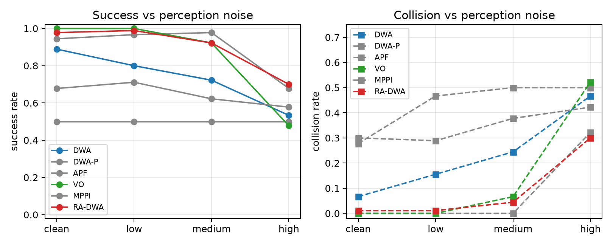
Figure 11 measures one plan() call in isolation as the number of obstacles grows. Latency is linear in the obstacle count for DWA, VO and RA-DWA, as the O(n_v n_w (T/Δt) n_obs) form predicts. RA-DWA has the largest constant factor because it evaluates a TTC term at every roll-out step for every obstacle, with VO between RA-DWA and DWA. At the density used in the benchmark (at most eight obstacles) RA-DWA runs at a mean of 19 ms and a p95 of 48 ms, inside the 100 ms budget; in the pure-Python reference implementation the budget is exceeded at 32 obstacles (129 ms), having been inside it at 16 obstacles (65 ms), so the crossing is between 16 and 32 and vectorised or parallel evaluation is the next step for denser scenes, at unchanged algorithmic complexity. Latency is also linear in the number of roll-outs, confirming the n_v n_w term (Figure 11, right).
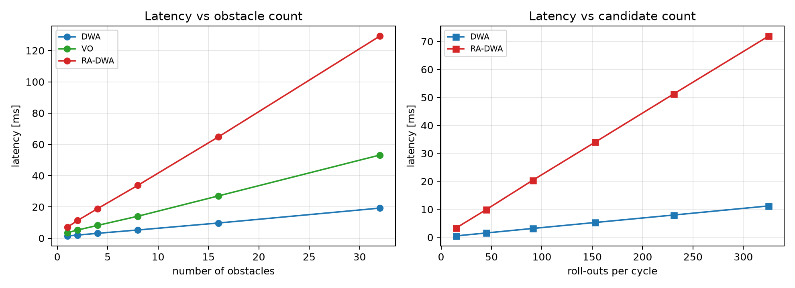
Perception error is not the only disturbance. Each planner was re-run with the applied command delayed by one or two control cycles and perturbed by Gaussian command noise (σ = 0.2 on v and ω), with perception clean (n = 48 episodes per cell). RA-DWA holds the highest success under every actuation fault: at a two-cycle delay it keeps 0.96 against 0.65 for DWA and 0.94 for VO, and with delay plus jitter 0.90 against 0.65 and 0.85 (Table 7). The one adverse point is jitter alone, where RA-DWA has the highest mean |jerk| of the three (17.8 against 12.7 and 15.0); delayed or noisy commands raise jerk for every planner, and RA-DWA's smoother nominal command does not protect it in that condition. A delayed command raises jerk for every planner, but RA-DWA holds the highest success and never falls below a baseline.
| Level | DWA | VO | RA-DWA |
|---|---|---|---|
| ideal (no delay, no jitter) | 0.88 / 0.06 | 0.98 / 0.02 | 0.98 / 0.02 |
| delay 1 cycle | 0.75 / 0.19 | 0.92 / 0.08 | 0.98 / 0.02 |
| delay 2 cycles | 0.65 / 0.27 | 0.94 / 0.06 | 0.96 / 0.04 |
| jitter σ = 0.2 | 0.75 / 0.25 | 0.96 / 0.04 | 0.98 / 0.02 |
| delay 2 + jitter | 0.65 / 0.35 | 0.85 / 0.15 | 0.90 / 0.10 |
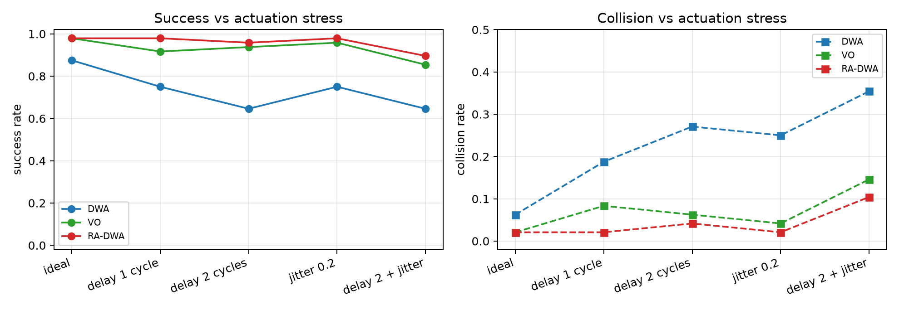
The six scenarios are hand-built. To test the planners against traffic from an independent simulator, the surrounding vehicles were generated by SUMO 1.27 [22] on a three-lane corridor with oncoming and merging traffic (SUMO's own car-following and lane-changing models), and their recorded 0.1 s trajectories were replayed as moving obstacles to the unchanged ego plant and planners; the traffic is open-loop with respect to the ego, which holds the environment fixed across planners (20 seeds; goal tolerance 2.0 m and a 60 s limit, larger than the main benchmark because the corridor is longer; obstacles modelled as 1.5 m discs). RA-DWA reaches 0.95 success with 0.05 collisions, above DWA (0.25) and MPPI (0.35) with p < 1e-3, and on a par with VO (0.60, p = 1.6e-2 in RA-DWA's favour) and with DWA-P (0.95, p = 1.0). As in the benchmark, the large gap to classical DWA closes once prediction is added, so the SUMO study separates prediction from no prediction rather than a graded from a hard decision rule. RA-DWA keeps the largest minimum TTC (2.87 s against 1.15 s for DWA-P and 0.60 s for VO), which is the same residual advantage seen at home (Table 8, Figure 13).
| Planner | Success (95% CI) | Collision (95% CI) | Min clear. [m] | Min TTC [s] | Mean |jerk| |
|---|---|---|---|---|---|
| DWA | 0.25 [0.11, 0.47] | 0.75 [0.53, 0.89] | 0.02 | 0.40 | 0.16 |
| DWA-P | 0.95 [0.76, 0.99] | 0.05 [0.01, 0.24] | 1.31 | 1.15 | 0.45 |
| VO | 0.60 [0.39, 0.78] | 0.40 [0.22, 0.61] | 0.40 | 0.60 | 0.96 |
| MPPI | 0.35 [0.18, 0.57] | 0.65 [0.43, 0.82] | 0.36 | 0.56 | 5.91 |
| RA-DWA | 0.95 [0.76, 0.99] | 0.05 [0.01, 0.24] | 0.64 | 2.87 | 0.56 |
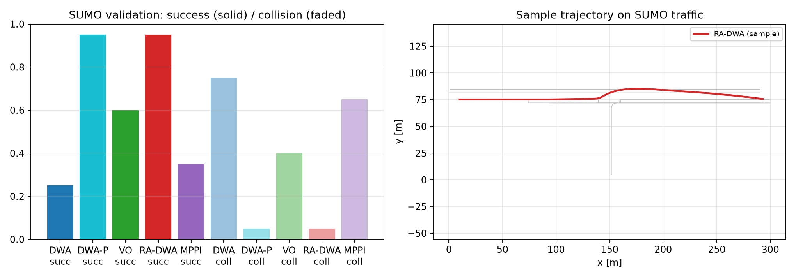
The results decompose cleanly into three factors. Motion-aware prediction sets task success: without it DWA fails where DWA-P and RA-DWA succeed, in the benchmark, under noise and on SUMO traffic. A safety distance that reflects the planner's own risk model sets the failure rate under uncertainty: VO with a 0.1 m margin collapses under noise, and the same VO with a 0.7 m margin does not. The risk field sets the time margin: RA-DWA holds the largest minimum TTC of any planner in every study while matching the strongest baselines on success and collisions. The earlier expectation that a graded risk field would be intrinsically more robust than a hard feasibility test is not supported once the safety distance is matched, and we state that plainly; the honest claim is narrower and better identified, that a normalized time-to-collision field buys a larger time margin at equal success and roughly two to ten times the compute of the cheap reactive baselines.
Two further observations bound the claim. The explicit speed cap of Equation (6) is neutral for safety in these scenarios, so the coupling that matters is the shared cost, not the second decision. And RA-DWA is not cheaper per cycle than DWA, DWA-P or VO; its value is margin, steering smoothness and interpretability, at a cost that stays inside a real-time budget at the densities tested.
Four boundaries define where the results hold. First, this is a local planner in simulation: it assumes a global route, performs no global planning, and no on-vehicle experiments were run. Second, the risk field predicts obstacles with constant velocity; on strongly curved motion such as a roundabout this is the residual source of the single remaining collision, and a constant-turn-rate prediction, while it removed that failure, reduced robustness under perception noise because turn rate estimated from a noisy velocity is unreliable, so the shipped method keeps constant-velocity prediction. Third, the baselines are implementations we wrote to a published-style formulation rather than reference implementations, and TEB in particular is a deliberately light version (8 poses, 15 iterations, no warm start); the optimisation baseline should be read as a light representative of its family, not as a tuned state of the art. Fourth, only one hard-constrained family (velocity obstacles) is studied, and its behaviour under noise is shown to be a function of its safety margin rather than of its decision rule; a broader sweep of hard-constrained and optimisation planners is needed before any structural generalisation. The method does not claim superiority in trajectory optimality over optimisation-based planners.
This paper set out to identify what governs the safety margin that a fast reactive planner can hold, and to design a planner around it. The answer is that motion-aware prediction and a safety distance that matches the planner's own risk model decide success and failure, whereas a bounded, time-based risk field decides how much time margin is kept. RA-DWA is a training-free DWA-family planner that integrates a normalized time-to-collision field along its roll-outs, propagates obstacles by their measured motion, and adapts its weights through a closed-form four-state scheduler. On a frozen six-scenario benchmark with paired statistics and two controls, a prediction-matched DWA and a margin-matched velocity-obstacle planner, RA-DWA matched the strongest baselines on success and collisions and held the largest minimum time-to-collision (3.56 s) and the lowest steering-rate variance (0.019) in the suite, at a worst-case p95 of 48 ms on a commodity laptop. The wider lesson, stated without overreach, is that in reactive planning the achievable margin comes from scoring predicted, time-based risk, and that claims of structural robustness for a graded decision rule must be tested against a margin-matched control before they are credited.
The benchmark, all planners, the frozen configuration and the scripts that reproduce every table and figure are available at https://github.com/kksuobo/ERX. The frozen configuration is fingerprinted (SHA-256 823709ac…). The repository includes scripts/verify.py, a dependency-free set of 33 reproducibility checks (geometry, TTC and risk invariants, statistical helpers, configuration-fingerprint stability, cross-process determinism of scenario generation, and the headline performance band).
This study is a computational simulation. It involved no human participants, no animal subjects and no personal data, so ethical approval and informed consent were not required.
Funding. This research received no external funding.
Author contributions. Suihua Lin: conceptualisation, methodology, software, validation, formal analysis, writing – original draft. Yuelan Huang: conceptualisation, supervision, validation, writing – review and editing.
Competing interests. The authors declare no competing interests.
Suihua Lin is a Professor at the School of Mathematics and Computer Science, Guangxi Minzu Normal University, China. Degree: MSc. Research interests: applied mathematics, mathematical modelling and optimisation, with applications to motion planning.
Yuelan Huang (corresponding author) is an Associate Professor at the School of Mathematics and Computer Science, Guangxi Minzu Normal University, China. Degree: MSc. Research interests: computational mathematics, algorithm design and optimisation, with applications to motion planning.